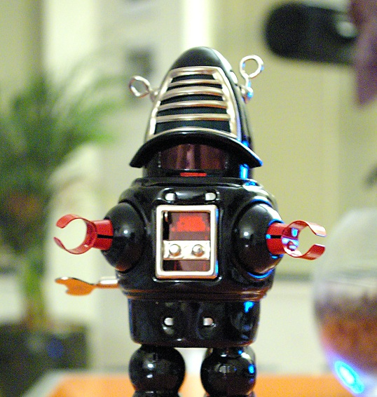

Latest in The Bot Blog
10 October
“Kill all humans?” But Why?
Somewhere in my stomach I felt a cold, hard knot. Take stainless steel alloyed with titanium and plate it with three inches of lead. Take a brain made up of super-charged magnetic crystals enclosed in a leaden cranium and shielded by alloy steel. A bullet wouldn’t pierce it; radiations wouldn’t derange it; an axe wouldn’t break it.
“Let’s go to town,” I said.
They looked at me admiringly. With three hundred almost indestructible androids on the loose I was the big brave hero. I grinned at them and hoped they couldn’t see the sweat on my face. Then I walked over to the Copter and climbed in.
 Lo, the robot walks
“Coming?” I asked.
Jack was pale under his freckles but Chief Dalton grinned back at me. “We’ll be right behind you, Morrison,” he said.
Behind me! So they could pick up the pieces. I gave them a cocky smile and switched on the engine, full speed.
Carron City is about a mile from the plant. It has about fifty thousand inhabitants. At that moment, though, there wasn’t a soul in the streets. I heard people calling to each other inside their houses, but I didn’t see anyone, human or android. I circled in for a landing, the Police Copter hovering maybe a quarter of a mile back of me. Then, as the wheels touched, half a dozen androids came around the corner. They saw me and stopped, a couple of them backing off the way they had come. But the biggest of them turned and gave them some order that froze them in their tracks, and then he himself wheeled down toward me.